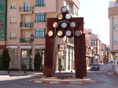
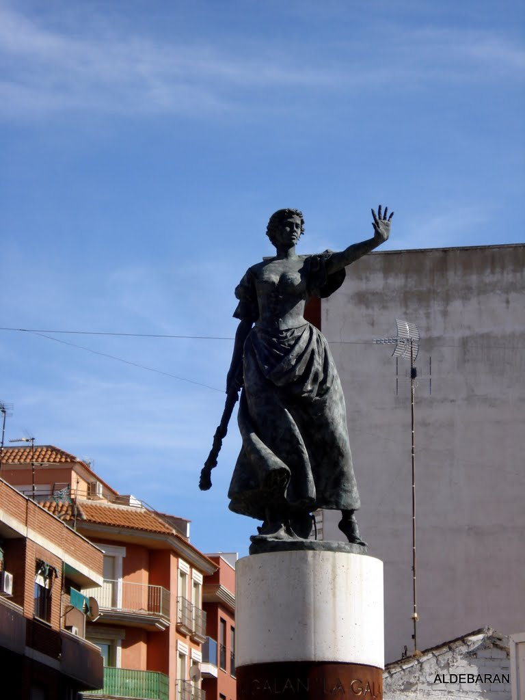
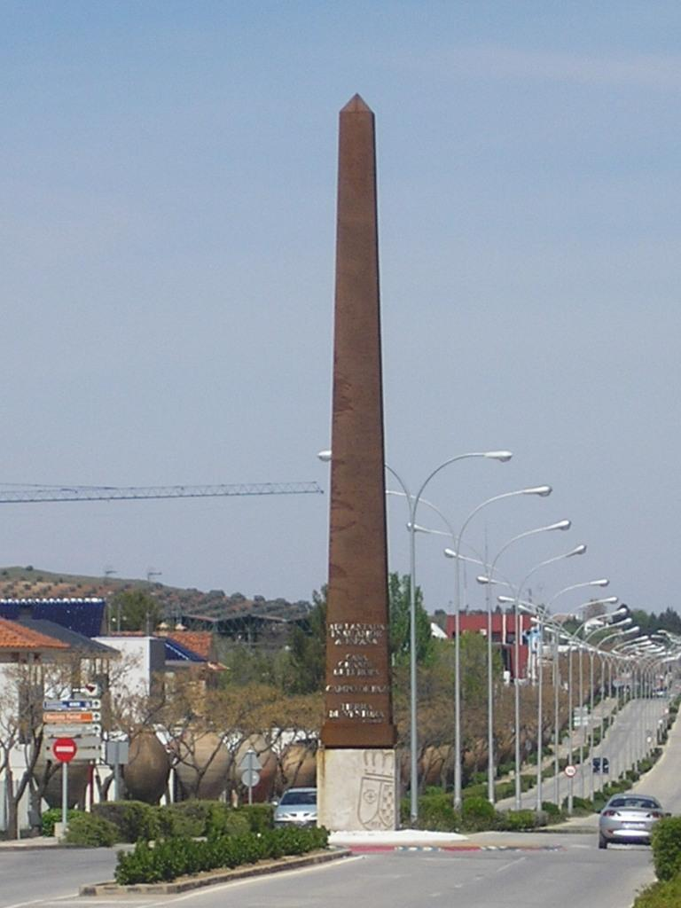
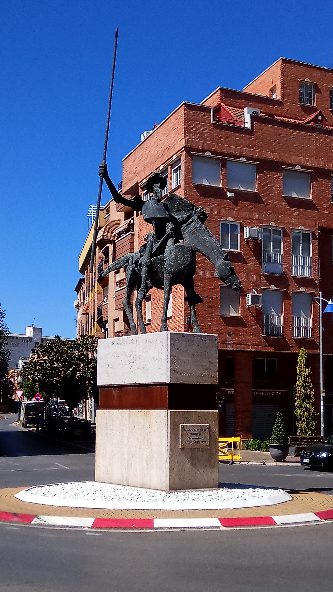

Puerta del Vino
Inaugurada en 2005. Situada en calle Seis de Junio con avenida 1.º de Julio. Obra de José Luis Sánchez, realizada en acero corten y planchas de acero inoxidable, de 8×4,80×1,67 m.
Primer monumento escultórico de la ruta de esculturas al aire libre de Valdepeñas, sirviendo de homenaje a todos los que lucharon a lo largo de la historia por engrandecer el producto más emblemático de la región, el vino.
Es además una alusión al hecho de que la Puerta de Alcalá y la Puerta de Toledo se financiaron con los impuestos que gravaban el comercio del vino cuando entraba a Madrid.
La Galana
Monumento a "La Galana", Valdepeñas (Ciudad Real).
Escultura en bronce fundido sobre columna de cemento en homenaje a la heroína de 1808 Juana Galán "La Galana" (1787-1812). Obra realizada en 2008 por el escultor Javier Galán (Madrid, 1968).
Se encuentra en la rotonda de San Marcos en la localidad de Valdepeñas, Ciudad Real, España.
El Gañán
Este homenaje al gañán o jornalero, obra de José Lillo Galiani, fue erigido en 2008 a iniciativa de Julián Morales en una rotonda de la carretera de Circunvalación Sur de Valdepeñas (Ciudad Real).

Está realizada en acero corten y mide 7 × 2,50 m. En la placa adosada al alto pedestal se lee: “Homenaje al gañán / In memoriam / Manuel Morales Márquez / Valdepeñas. Enero de 2009”.
Obelisco
Erigido con motivo del Bicentenario del 6 de Junio, para dejar constancia de las palabras de reconocimiento a la historia de la Ciudad que S. M. el Rey Don Juan Carlos I pronunció con motivo de su visita a Valdepeñas el día 19 de febrero de 1990: “Adelantada en su amor a España, Casa Grande de Europa, Campo de Paz y Tierra de Ventura”.
Monolito de 18 metros de altura diseñado por la iniciativa del Ayuntamiento y realizado por la fundición madrileña del reconocido Guillermo Ponce, que realizó también la Puerta del Vino, del escultor José Luis Sánchez.
Don Quijote
Su escultura representa a un Quijote que muestra su idealismo utópico con los brazos en cruz mirando hacía el cielo, implorando que la justicia impere sobreesta sociedad deshumanizada. De igual manera, representa a un Rocinante enjuto y delgado como señal de la realidad contra la que lucha Don Quijote. Obra de madurez de su autor inspirada en el simbolismo de los valores humanos, cuyo modelo lo inició en 1970.
El Quijote representa la síntesis de la virtud humana, imperecedera en el tiempo, donde el dramatismo de las figuras queda soslayado por la libertad plástica, que se abre al espacio, dinamizando su
composición.
Autor: Venancio Blanco.
Título: Quijote.
Técnica: Bronce.
Dimensiones: 6,50 x 3,30 x 4,10 m.
Año: 2006
In Memoriam a Alberto Ramírez López.